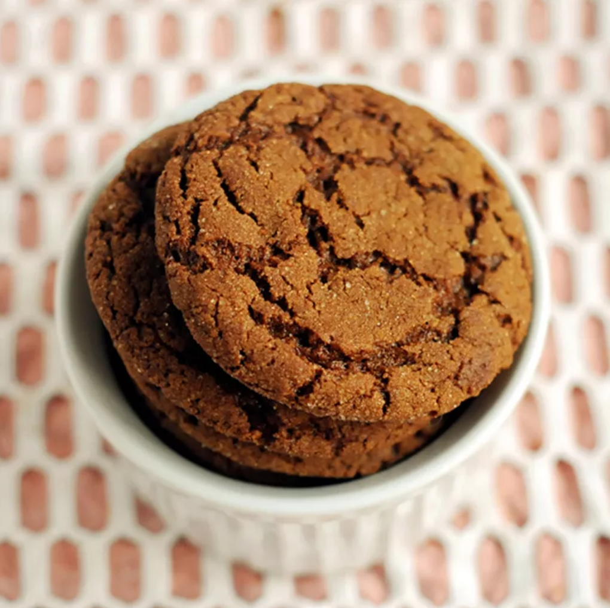

Back
Soft Ginger Cookies

delicious looking ginger cookies on a plate
Another childhood fave are these ginger cookies. They melt in your mouth! If you've never tried, do yourself a favour and follow this!
This recipe is from All Recipes. I hope you enjoy making this with your family.
Ingredients
- 2 tablespoons white sugar
- 2 1/4 cups all-purpose flour
- 2 teaspoons ground ginger
- 1 teaspoon baking soda
- 3/4 teaspoon ground cinnamon
- 1/2 teaspoon ground cloves
- 1/4 teaspoon salt
- 3/4 cup butter or margarine, softened
- 1 cup white sugar
- 1 large egg
- 1/4 cup molasses
- 1 tablespoon water
Directions
- Preheat oven to 350 degrees F (175 degrees C). Set 2 tablespoons sugar in a small bowl; set aside.
- Sift together flour, ginger, baking soda, cinnamon, cloves, and salt in a bowl.
- Beat butter and remaining 1 cup sugar in a large bowl with an electric mixer until light and fluffy.
Beat in egg, then stir in molasses and water. Gradually stir the sifted ingredients into the molasses mixture until well combined.
- Use floured hands to shape dough into 24 walnut-sized balls. Roll each ball in the reserved sugar until coated.
Place cookies 2 inches apart onto ungreased cookie sheets, and flatten slightly with the bottom of a glass.
- Bake in the preheated oven for 8 to 10 minutes, switching racks halfway through.
- Remove from the oven and allow cookies to cool on the baking sheets for 5 minutes, then transfer to a wire rack to cool completely.